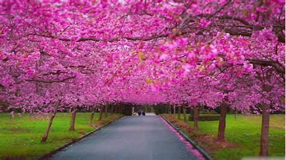

<!-- router nesesario usar ion view que le permita a ionic enrutar correctamente el contenido -->
<ion-view>
      <ion-header-bar class="bar-stable">
        <h1 class="title">Ionic Blank Starter</h1>
      </ion-header-bar>
      <ion-content>
      	<div>{{paisaje}}</div>
      	<!-- aqui aplico directivas -->
      	<!--
      	<input type="checkbox" ng-model="dato1">
      	<input type="checkbox" ng-model="dato2">
      	<h2 ng-show="dato1">dato 1</h2>
      	<h2 ng-hide="dato2">dato 2</h2>
      	<div class="list card">
      		<div class="item item-avatar">
      			
      			<h2>Avicii</h2>
      			<p>Abril 23, 18</p>
      		</div>
      		<div class="item item-body">
      			
      			<p>ipsum esta es la imagen con texto para que mi compañero termine de copiar todo lo que le falta lo estoy precisamente esperando Al comenzar la primavera se da por terminada la temporada de frío y comienzan los días cálidos, y el día y la noche tienen la misma duración. Para la agricultura, la primavera es ideal ya que es propicio para la siembra o cosecha.
En otros aspectos, la primavera en ciertas partes del mundo, suele ser calificada como la estación del amor, del romance, porque así como las mariposas revolotean y las flores ofrecen sus mejores colores, de la misma manera existe la creencia que durante esta estación se originan más matrimonios o noviazgos, que las que se originan en otras estaciones del año.</p>
      			<a class="subdued">1 like</a>
      			<a class="subdued">1 coments</a>
      		</div>
      	</div> 
      -->
      	<ion-list show-delete="true">
      		<ion-item href="#">Leonel messi</ion-item>
      		<ion-item href="#">James Rodriguez</ion-item>
      		<ion-item href="https://es.wikipedia.org/wiki/Radamel_Falcao_Garc%C3%ADa">falcao Garcia</ion-item>
      		<ion-item>Carlos Baca</ion-item>
      		<ion-item>Luis Suaréz
      			<ion-delete-button class="ion-minus-circled" ng-show="img" ng-click="img">
                               <input type="checkbox" ng-model="img">
                               <input type="checkbox" ng-model="img">
                        </ion-delete-button>
                                  
                        

      		</ion-item>
      		

      	</ion-list>
      </ion-content>
    </ion-view>